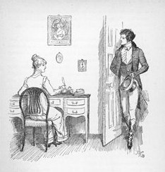
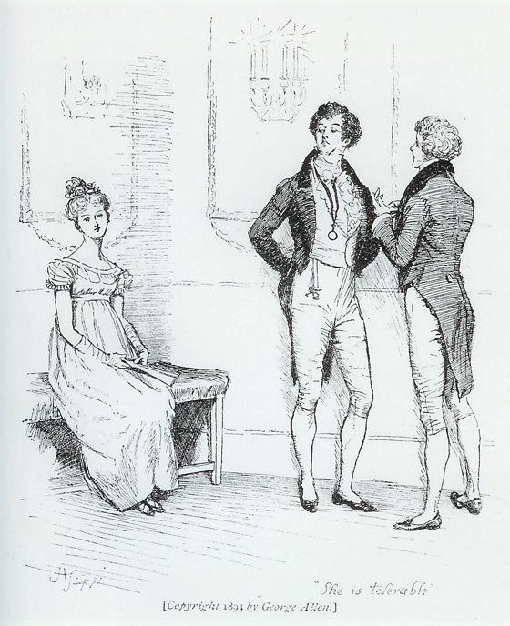
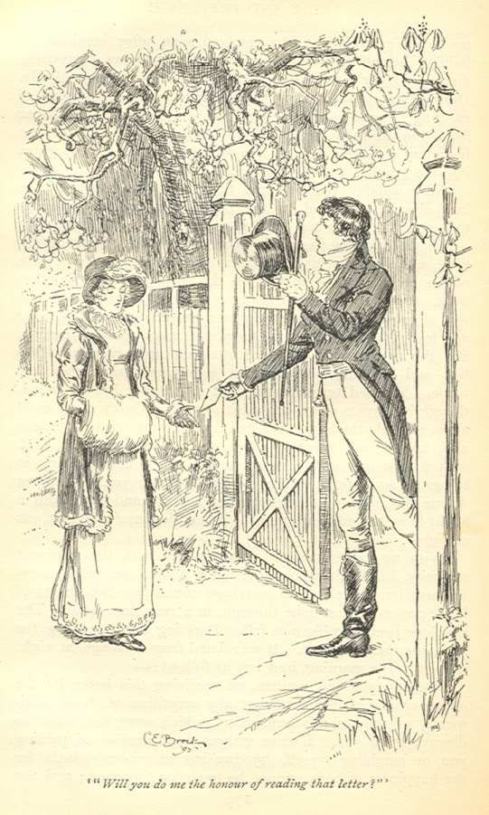

List of Books
Home Page
SUMMARY

In the early 19th century, the Bennet family live at their Longbourn estate, situated near the village of Meryton in Hertfordshire,
England. Mrs. Bennet's greatest desire is to marry off her five daughters in order to secure their futures. The arrival of Mr. Bingley,
a rich bachelor who rents the neighbouring Netherfield estate, gives her hope that one of her daughters might contract an advantageous
marriage, because "It is a truth universally acknowledged, that a single man in possession of a good fortune, must be in want of a wife".
At a ball, the family is introduced to the Netherfield party, including Mr. Bingley, his two sisters and Mr. Darcy, his dearest friend.
Mr. Bingley's friendly and cheerful manner earns him popularity among the guests. He appears interested in Jane, the eldest Bennet
daughter. Mr. Darcy, reputed to be twice as wealthy as Mr Bingley, is haughty and aloof, causing a decided dislike of him. He declines
to dance with Elizabeth, the second-eldest Bennet daughter, as she is "not handsome enough". Although she jokes about it with her friend,
Elizabeth is deeply offended. Despite this first impression, Mr. Darcy secretly begins to find himself drawn to Elizabeth as they continu
to encounter each other at social events, appreciating her wit and frankness.
Mr. Collins, the heir to the Longbourn estate, visits the Bennet family with the intention of finding a wife among the five girls under
the advice of his patroness Lady Catherine de Bourgh, also revealed to be Mr. Darcy's aunt. He decides to pursue Elizabeth. The Bennet
family meet the charming army officer George Wickham, who tells Elizabeth in confidence Mr. Darcy's horrible past actions in his regards.
Elizabeth, blinded by her prejudice toward Mr. Darcy, believes him.

Elizabeth dances with Mr. Darcy at a ball, where Mrs. Bennet hints loudly that she expects Jane and Bingley to become engaged.
Elizabeth rejects Mr. Collins' marriage proposal, to her mother's fury and her father's relief. Mr. Collins instead proposes to
Charlotte Lucas, a friend of Elizabeth. Having heard Mrs. Bennet's words at the ball and disapproving of the marriage, Mr. Darcy
joins Mr. Bingley in a trip to London and, with the help of his sisters, convinces him not to return to Netherfield. A heartbroken
Jane visits her Aunt and Uncle Gardiner in London to raise her spirits, while Elizabeth's hatred for Mr. Darcy grows as she suspects
he was responsible for Mr Bingley's departure.
In the spring, Elizabeth visits Charlotte and Mr. Collins in Kent. Elizabeth and her hosts are invited to Rosings Park, Lady
Catherine's home. Mr. Darcy and his cousin, Colonel Fitzwilliam, are also visiting Rosings Park. Fitzwilliam tells Elizabeth
how Mr. Darcy recently saved a friend, presumably Bingley, from an undesirable match. Elizabeth realises that the prevented
engagement was to Jane. Mr. Darcy proposes to Elizabeth, declaring his love for her despite her low social connections. She
is shocked, as she was unaware of Mr. Darcy's interest, and rejects him angrily, saying that he is the last person she would
ever marry and that she could never love a man who caused her sister such unhappiness; she further accuses him of treating
Wickham unjustly. Mr. Darcy brags about his success in separating Bingley and Jane and sarcastically dismisses the accusation
regarding Wickham without addressing it.

Mr. Darcy gives Elizabeth a letter, explaining that Wickham, the son of his late father's steward, had refused the "living"
his father had arranged for him and was instead given money for it. Wickham quickly squandered the money and tried to elope
with Darcy's 15-year-old sister, Georgiana, for her considerable dowry. Mr. Darcy also writes that he separated Jane and
Bingley because he believed her indifferent to Bingley and because of the lack of propriety displayed by her family.
Elizabeth is ashamed by her family's behaviour and her own prejudice against Mr. Darcy.
Months later, Elizabeth accompanies the Gardiners on a tour of Derbyshire. They visit Pemberley, Darcy's estate. When Mr. Darcy
returns unexpectedly, he is exceedingly gracious with Elizabeth and the Gardiners. Elizabeth is surprised by Darcy's behaviour and
grows fond of him, even coming to regret rejecting his proposal. She receives news that her sister Lydia has run off with Wickham.
She tells Mr. Darcy, then departs in haste. After an agonising interim, Wickham agrees to marry Lydia. She visits the family and
tells Elizabeth that Mr. Darcy was at her wedding. Though Mr. Darcy had sworn everyone involved to secrecy, Mrs. Gardiner now feels
obliged to inform Elizabeth that he secured the match, at great expense and trouble to himself.
Mr. Bingley and Mr. Darcy return to Netherfield. Jane accepts Mr. Bingley's proposal. Lady Catherine, having heard rumours that
Elizabeth intends to marry Mr. Darcy, visits her and demands she promise never to accept Mr. Darcy's proposal, as she and Darcy's
late mother had already planned his marriage to her daughter Anne. Elizabeth refuses and asks the outraged Lady Catherine to leave.
Darcy, heartened by his aunt's indignant relaying of Elizabeth's response, again proposes to her and is accepted.